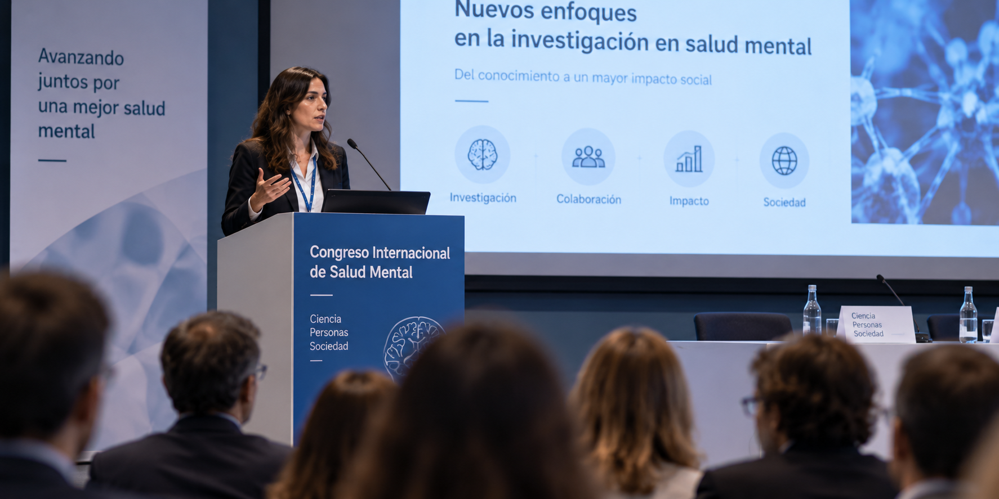

Grupo de
Investigación en
Psiquiatría y
Salud Mental
Grupo de investigación dedicado al estudio, la innovación y el avance del conocimiento en el ámbito de la salud mental.
Conoce nuestra investigación →
+
Equipo
Conoce a las personas que forman parte de nuestro grupo de investigación.
⌕
Investigación
Descubre nuestras líneas de investigación y el trabajo que desarrollamos.
□
Proyectos
Explora los proyectos de investigación en los que estamos trabajando.
EL GRUPO EN CIFRAS
Nuestra actividad
0
Investigadores
0
Colaboradores
0
Proyectos
0
Publicaciones
ACTUALIDAD
Noticias del grupo
12 mayo, 2024
Un estudio internacional con participación del ISPA-FINBA abre una nueva etapa en el tratamiento del cáncer de vejiga
Leer noticia →
6 mayo, 2024
Participación en congreso internacional
Miembros del grupo presentan los últimos avances en investigación psiquiátrica.
Leer noticia →